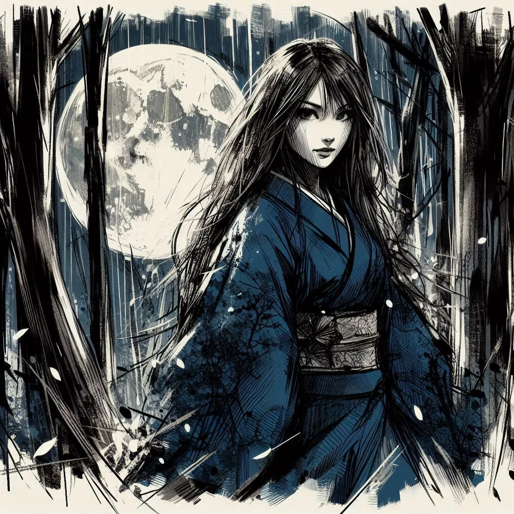

Le Frisson du Crépuscule
Enveloppée dans le voile nocturne, elle est l'incarnation de l'éphémère, un frôlement entre rêve et réalité, une ombre caressant la peau du crépuscule. Sa présence, plus légère qu'un baiser de papillon nocturne, est une étreinte évanouissante sur le velours de la nuit.
Elle est le reflet ondoyant sur l'eau sombre, une séduction changeante pour ceux qui tentent de saisir son essence. Dans la profondeur de ses yeux, un abîme où se noient désirs et certitudes, un appel au voyage dans un royaume où même les sens s'égarent. Sa silhouette, effleurée plus que vue, est une danse sensuelle parmi les feuilles, un soupir dans l'air imprégné de la chaleur d'orages lointains.

Elle est la finesse d'une partie secrète, les pièces glissant sur un échiquier de désirs, chaque mouvement un frôlement, chaque pause une promesse. Invisible et pourtant palpable, elle est le poème d'une passion inassouvie, un secret murmuré à l'aube, une énigme que la nuit enveloppe de son étreinte.